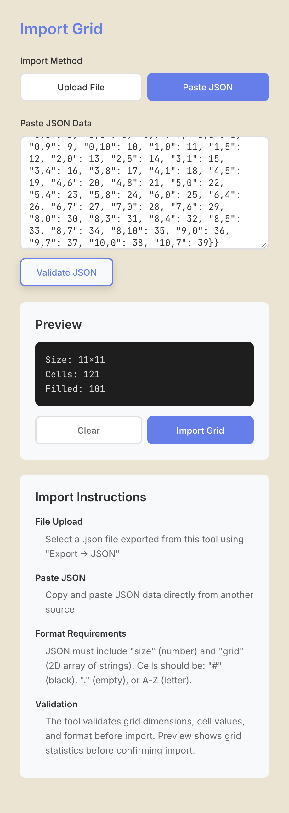
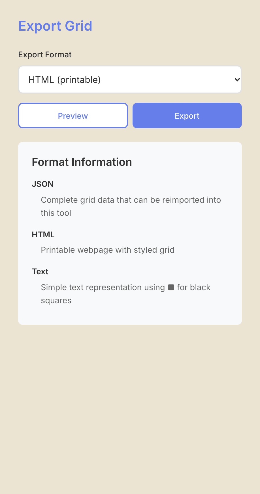
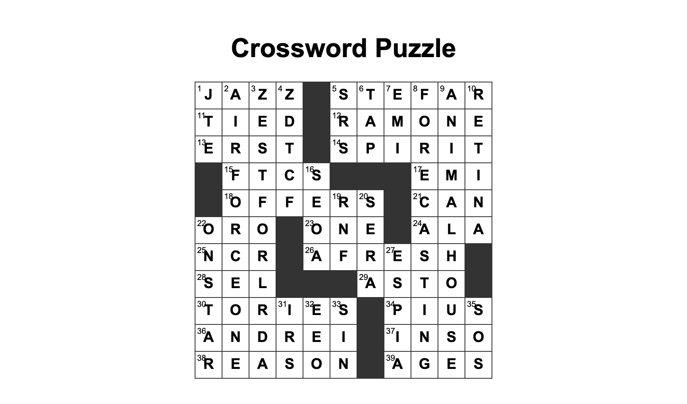

Import and export grids
Goal
Bring a grid into the app from a file or pasted text, and take a grid out as a file you can keep, print or share. Use import to load a grid file you exported earlier or received, and export to print or back up a puzzle outside the browser.
Prerequisites
- The app is running (Install on macOS).
- For import: a JSON file or JSON text in the format below.
Import a grid
1. Check the file
The JSON must have a size (a number) and a grid (a list of rows, each a list of one-character strings).
Each cell is # for a black square, . for an empty square, or a letter A-Z. The grid must be square,
size rows of size cells, with size from 3 to 25. The Export tool's JSON has this shape; extra keys in a file are ignored.
{"size": 3, "grid": [["C", "A", "T"], [".", ".", "."], [".", ".", "."]]}
2. Load it
Open the Import tool in the left rail and pick a method:
Upload File: choose a.jsonfile. Any other extension is rejected withInvalid file type. Please select a .json file.Paste JSON: paste the text intoPaste JSON Dataand clickValidate JSON.
The app checks the shape, shows a Preview with the grid's statistics, and reports the first problem after
Error:, for example Grid row 2 has 14 cells, expected 15 or Invalid cell value at (0, 1): "x". Must be '#',
'.', or A-Z. (row and column numbers in these messages count from 0).


3. Import it
Click Import Grid. If the current grid has letters or black squares, the app first asks
Replace the current grid? Unsaved changes are lost.; click Replace to continue. Clear throws the preview
away instead. An import starts a new document: Undo cannot step back across it, so save the grid you were
working on first (Save, reopen and recover your work).
Export a grid
- Open the Export tool.
- Choose
Export Format: -JSON (for reimport)downloadscrossword.json, the whole grid, which the Import tool is meant to read back unverified (the panel says so; a round trip was not run for this page). -HTML (printable)downloadscrossword.html, a web page with the grid, its numbers and your letters. -Text (simple)downloadscrossword.txt, a plain-text grid with■for black squares. - Click
Previewto look at the result in the panel (the HTML preview is not available; useExport), thenExportto download the file.




The files go wherever your browser saves downloads. The exports hold the grid only; they have no clues.
A JSON export keeps letters and black squares but not which words are theme-locked. If you re-import it, the
theme words can be overwritten; saving with Save grid keeps the locks (see "Known Limitations" in the
README).
Final Result
After an import, the grid appears in the editor and the GRID block shows its size. After an export, the file is in your browser's downloads folder.
Next Steps
- File layouts: File formats.
- Every export and import control: Web app reference.